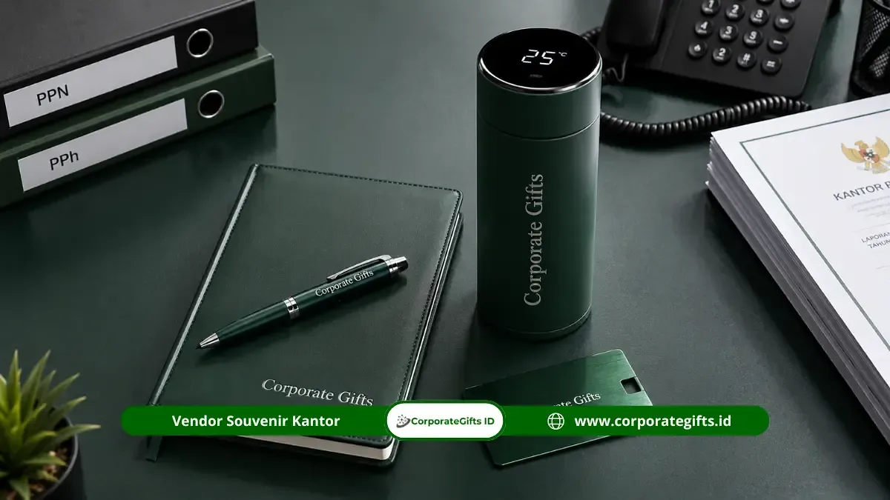

Corporate Gifts ID - Souvenir kantor pajak adalah merchandise perusahaan dan cinderamata berlogo instansi yang digunakan Direktorat Jenderal Pajak (DJP) serta Kantor Pelayanan Pajak (KPP) di seluruh Indonesia untuk kebutuhan sosialisasi wajib pajak, apresiasi pegawai teladan, forum Tax Gathering, hingga seremoni pelepasan purnabakti pejabat.
Melalui katalog produk CorporateGifts.ID, kami menghadirkan solusi pengadaan souvenir kantor pajak lengkap dengan standar mutu material tinggi, ketepatan waktu produksi, serta kelengkapan dokumen administrasi pengadaan instansi pemerintah yang tertib dan transparan.
Poin Kunci Pengadaan Souvenir Kantor Pajak:
- Varian Lengkap: Mulai dari set alat tulis eksekutif, tumbler stainless vacuum SUS 304, flashdisk kartu, hingga hampers hardbox mewah.
- Kesesuaian Administrasi: Penyediaan dokumen lengkap berupa Surat Penawaran Resmi, e-Faktur Pajak (PPN), dan Berita Acara Serah Terima (BAST).
- Teknik Branding Tahan Lama: Kustomisasi logo resmi menggunakan laser engraving, deboss presisi, dan sablon industri berstandar tinggi.
- Komitmen Tenggat Waktu: Penyesuaian jadwal produksi ketat menjelang Pekan Panutan Pajak, Tax Gathering, maupun agenda tutup buku anggaran.
Mengapa Memilih CorporateGifts.ID untuk Pengadaan Souvenir Kantor Pajak?
Pengadaan souvenir di lingkungan instansi pemerintah menuntut ketelitian ganda. Tidak hanya terkait estetika fisik produk, melainkan juga kepatuhan pada pedoman identitas visual resmi instansi dan tertib administrasi anggaran.
Berdasarkan riset Promotional Products Association International (PPAI) 2023-2024, sebanyak 83% penerima merchandise fungsional tetap mengingat identitas instansi pemberi hingga lebih dari 6 bulan pasca-acara. Bagi Kantor Pelayanan Pajak (KPP), membagikan souvenir promosi yang berfaedah saat sosialisasi SPT Tahunan atau edukasi regulasi perpajakan baru merupakan instrumen public relations yang sangat efektif dalam meningkatkan kepatuhan sukarela wajib pajak.
Sebagai penyedia layanan pengadaan cinderamata korporat terpercaya, CorporateGifts.ID telah berpengalaman melayani berbagai unit kerja kementerian dan lembaga negara dengan jaminan pengerjaan tepat waktu serta kontrol kualitas (QC) yang ketat pada setiap unit produk.
Koleksi Souvenir Kantor Pajak Terpopuler 2026
Berikut adalah deretan produk yang paling sering dipesan oleh KPP Pratama, KPP Madya, maupun Kanwil DJP untuk aneka agenda resmi:
1. Set Alat Tulis Kantor Premium Berlogo
Kombinasi antara pulpen metal eksklusif dengan buku agenda hardcover berlogo deboss adalah pilihan utama untuk rapat koordinasi, rekonsiliasi penerimaan, dan cendera mata kunjungan kedinasan tamu VIP.
Set alat tulis dalam kotak kardus kraft atau hardbox magnetik memberikan impresi yang sangat rapi, elegan, serta berdaya guna tinggi bagi mobilitas harian pegawai pajak.
2. Tumbler Custom Grafir Logo untuk Rapat Kerja
Tumbler stainless steel vacuum flask SUS 304 dengan grafir laser logo DJP menjadi souvenir favorit di meja kerja. Teknologi insulasi suhu ganda mampu menahan air dingin atau panas hingga 12 jam, sekaligus mendukung gerakan kantor ramah lingkungan (eco-office) bebas sampah plastik sekali pakai.

Paket seminar kit dan gift set souvenir kantor pajak lengkap dengan tumbler grafir, flashdisk kartu, dan agenda berlogo emas.
3. Flashdisk dan Perangkat Digital Custom Pegawai
Untuk kebutuhan edukasi regulasi atau distribusi materi sosialisasi perpajakan secara digital, flashdisk kartu berkapasitas 16 GB - 64 GB dengan sablon full color dua sisi adalah media yang sangat praktis. Selain ringkas disimpan di dompet, perangkat digital ini juga dapat dipadukan dengan gadget kantor pintar seperti wireless mouse pad atau cardholder lanyard.
Tabel Matriks Kategori Souvenir Kantor Pajak Sesuai Kegiatan
Berikut rekomendasi paket cinderamata berdasarkan jenis agenda kedinasan di lingkungan instansi perpajakan:
| Agenda Acara | Target Peserta | Rekomendasi Souvenir | Teknik Personalisasi | Estimasi Biaya per Unit |
|---|---|---|---|---|
| Sosialisasi Wajib Pajak & Tax Gathering | Wajib Pajak Badan & Orang Pribadi | Tote Bag Kanvas + Pulpen Metal + Notes A5 | Sablon Digital & Laser Engraving Logo | Rp45.000 - Rp95.000 |
| Rapat Koordinasi & Raker Internal KPP | Pegawai, Fungsional Pemeriksa, AR | Tumbler Vacuum SUS 304 + Agenda Deboss | Laser Grafir Nama & Deboss Logo DJP | Rp120.000 - Rp250.000 |
| Kunjungan Tamu Resmi & Penandatanganan MoU | Pejabat Instansi Mitra, Forkopimda | Executive Gift Set Hardbox + Plakat Kristal | Gold Foil Stamping & Grafir Logam | Rp350.000 - Rp850.000+ |
| Pelepasan Purnabakti (Pensiun) Pegawai | Karyawan Senior / Kepala Seksi | Plakat Kayu Logam + Hampers Premium | Ukiran Masa Bakti & Personalisasi Nama | Rp500.000 - Rp1.500.000 |
Keunggulan Layanan Kustomisasi Souvenir Instansi
Mengapa ratusan kantor pemerintah mempercayakan pengadaannya kepada CorporateGifts.ID? Berikut keunggulan utama layanan kami:
- Akurasi Logo Presisi Tinggi: Kami menerapkan standar pewarnaan logo yang selaras dengan panduan identitas visual kementerian tanpa risiko pergeseran warna.
- Pilihan Material Teruji: Setiap tumbler, pulpen, dan buku agenda telah melalui tahap uji kualitas ketahanan fisik sebelum proses cetak massal dimulai.
- Fleksibilitas Desain Mockup Gratis: Tim desainer profesional kami siap membuatkan visual preview mockup 3D gratis dalam waktu 1x24 jam untuk mempermudah persetujuan pejabat pembuat komitmen (PPK).
- Kapasitas Produksi Massal: Didukung workshop percetakan modern yang sanggup memproduksi ribuan unit paket seminar kit kantor dalam tenggat waktu yang ketat.
Alur Pemesanan Cepat dan Kelengkapan Administrasi B2B
Proses pemesanan souvenir kantor pajak di CorporateGifts.ID dirancang sangat ringkas guna menyesuaikan dengan SOP birokrasi instansi:
- Konsultasi Kebutuhan: Hubungi tim konsultan kami untuk menyampaikan jumlah peserta, jenis produk, dan estimasi pagu anggaran.
- Penerbitan Surat Penawaran: Tim kami menerbitkan Surat Penawaran Harga resmi lengkap dengan spesifikasi teknis dan rincian pajak (PPN/PPh).
- Approval Sample Mockup: Penyetujuan desain layout logo instansi pada produk sebelum produksi massal dijalankan.
- Proses Produksi & QC: Pembuatan cinderamata dengan pengawasan mutu menyeluruh di setiap tahapan.
- Pengiriman & BAST: Produk dikirim tepat waktu ke alamat kantor instansi disertai dokumen Berita Acara Serah Terima (BAST) dan e-Faktur resmi.
Pertanyaan Umum Seputar Souvenir Kantor Pajak (FAQ)
Kesimpulan dan Konsultasi Pengadaan Resmi
Souvenir kantor pajak yang berkualitas memadukan fungsi harian yang nyata, keindahan hasil cetak logo resmi, serta kemasan yang representatif untuk menjaga martabat dan citra institusi.
Konsultasikan kebutuhan pengadaan cinderamata kantor pajak Anda bersama CorporateGifts.ID. Jelajahi pilihan produk di katalog produk resmi kami atau ajukan permohonan RAB resmi melalui formulir permintaan penawaran harga sekarang juga untuk mendapatkan layanan profesional bergaransi tepat waktu.
Disclaimer: Estimasi biaya dan spesifikasi item souvenir kantor pajak dalam panduan ini dapat disesuaikan secara fleksibel dengan alokasi DIPA anggaran instansi Anda melalui tim konsultan resmi CorporateGifts.ID.